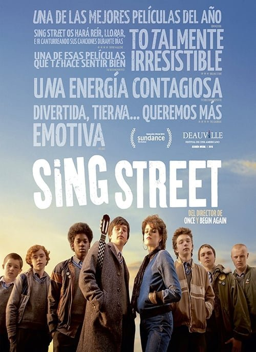

Sing Street (2016)
Sinopsis Rápida
En el Dublín de los 80, un chico tímido forma una banda para impresionar a una chica, desencadenando una aventura musical llena de amistad, creatividad y autodescubrimiento.
Sinopsis Detallada
Sing Street nos sumerge en la vida de Conor, un adolescente irlandés que se enfrenta a problemas familiares y escolares. Para escapar de su realidad y conquistar a Raphina, una misteriosa chica, crea una banda junto a sus amigos. La película explora temas de la adolescencia, la amistad, la búsqueda de la identidad y la fuerza de la música como expresión artística. Con una banda sonora excepcionalmente ochentera, Sing Street es una carta de amor a la música y al poder transformador de la creatividad.
¿Por qué tenés que verla?
- Una historia conmovedora y nostálgica sobre la búsqueda de la identidad y el poder de la música.
- La banda sonora ochentera es increíblemente contagiosa y define la atmósfera de la película.
- Sing Street ha resonado con el público por su retrato honesto y encantador de la adolescencia y la amistad.
- Excelente dirección que captura la esencia de la época y las emociones de los personajes.
Idea Extra
Comparación de la banda sonora de Sing Street con bandas icónicas de los 80.
{{CONTENIDO_RELACIONADO}}